|
Card
Card
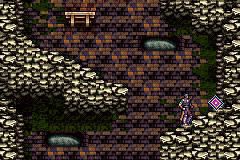
เมื่อฆ่าศัตรูบางครั้งจะได้รับการ์ดจากมันด้วย
วิธีใช้การ์ด ต้องเลือกการ์ดคู่กัน 2 ใบ
ซึ่งการ์ดจะมีอยู่ 2 ชนิดใหญ่ๆ คือ
Action และ Effect
เวลาใช้ต้องเลือกการ์ดชนิดละ 1 ใบ
จึงจะสามารถใช้ความสามารถ DSS ได้
การ์ดแต่ละคู่ มีความสามารถแตกต่างกันไป
ดูรายละเอียดได้ที่หัวข้อ DSS
* Note : ในการเก็บรวบรวมการ์ดนั้น ควรดูแผนที่ประกอบด้วย Map
Card
(แผนที่นี้ได้มาจาก Gamefaqs)
(หากดูแผนที่จาก Gamefaqs ไม่ได้ ให้ดูที่นี่ Map
Card )
Action Card
Mercury
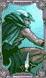
(หรืออีกชื่อหนึ่งคือ Hermes)
ฑูตสวรรค์ ผู้ส่งสารของเทพเจ้า
มีความสามารถ ด้านความแข็งแกร่ง
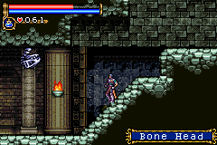
หาได้จากศัตรู : Bone Head
Venus
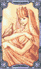
(หรืออีกชื่อหนึ่งคือ Aphrodite)
เทพเจ้าสตรีแห่งความรัก และความสวยงาม
มีความสามารถ ด้านการเสริมความสามารถ
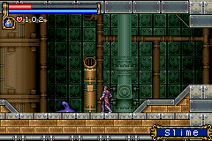
หาได้จากศัตรู : Slime
Jupiter
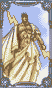
(หรืออีกชื่อหนึ่งคือ Zeus)
เทพเจ้าแห่งท้องฟ้า และเป็นหัวหน้าของเทือกเขา Olympus
มีความสามารถ ด้านการปกป้อง ป้องกัน
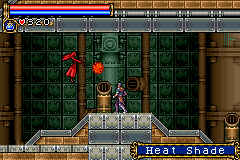
หาได้จากศัตรู : Heat Shade
Mars
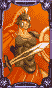
(หรืออีกชื่อหนึ่งคือ Ares)
เทพเจ้าแห่งสงคราม
มีความสามารถ ด้านการเปลี่ยนแปลง
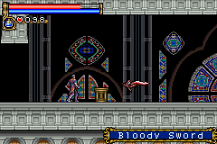
หาได้จากศัตรู : Bloody Sword
Diana
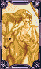
(หรืออีกชื่อหนึ่งคือ Artemis)
เทพเจ้าสตรี แห่งดวงจันทร์ และการล่าสัตว์
มีความสามารถ ด้านการสร้างสรรค์
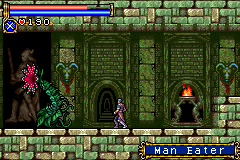
หาได้จากศัตรู : Man Eater
Apollo
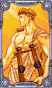
เทพเจ้าแห่งพระอาทิตย์, ดนตรี และการทำนาย
มีความสามารถ ด้านการสร้างระเบิด
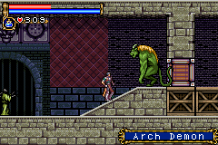
หาได้จากศัตรู : Arch Demon
Neptune
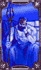
(หรืออีกชื่อหนึ่งคือ Poseidon)
เทพเจ้าแห่งท้องทะเล
มีความสามารถ ด้านการเยียวยารักษา
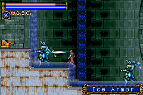
หาได้จากศัตรู : Ice Armor
Saturn
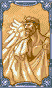
(หรืออีกชื่อหนึ่งคือ Cronus)
เทพเจ้าแห่งกสิกรรม ผู้เป็นบิดาของ Jupiter (Zeus)
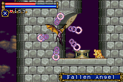
หาได้จากศัตรู : Fallen Angel
Uranus
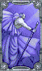
เทพเจ้าผู้สร้างสวรรค์
มีความสามารถ ด้านการออกหมายเรียก อัญเชิญ
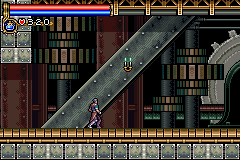
หาได้จากศัตรู : Scary Candle
Pluto
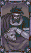
(หรืออีกชื่อหนึ่งคือ Hades)
เทพเจ้าแห่งโลกใต้พิภพ (นรก)
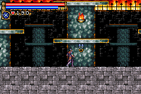
หาได้จากศัตรู : Trick Candle
Effect Card
Salamander
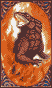
กิ้งก่าที่แหวกว่ายอยู่ในเปลวไฟ
มีพลังเกี่ยวกับไฟ
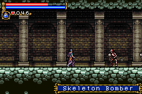
หาได้จากศัตรู : Skeleton Bomber, Imp
Serpent
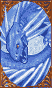
มักกรแหวกว่ายในวารี (^^;)
มีพลังเกี่ยวกับน้ำแข็ง
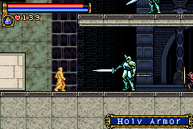
หาได้จากศัตรู : Earth Demon, Holy Armor
Mandragora

รากไม้ที่มีลักษณะเหมือนมนุษย์
มีพลังเกี่ยวกับพืช, ไม้
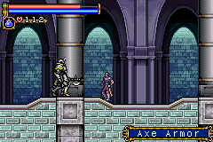
หาได้จากศัตรู : Axe Armor, Lizard Man
Golem
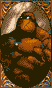
สิ่งที่สร้างเลียนแบบมนุษย์มาจากดิน
มีพลังเกี่ยวกับดิน
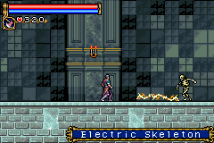
หาได้จากศัตรู : Electric Skeleton, Minotaur
Cockatrice
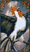
Cockatrice มีพลังที่จะเปลี่ยนทุกสิ่งให้กลายเป็นหิน
มีพลังเกี่ยวกับหิน
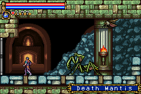
หาได้จากศัตรู : Stone Armor, Death Mantis
Manticore
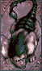
Manticore มีตัวเป็นสิงโต มีหางเป็นหางแมงป่อง
มีพลังเกี่ยวกับพิษ
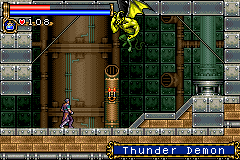
หาได้จากศัตรู : Thunder Demon, Succubus
Griffin
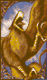
Griffin มีหัวและปีกเป็นนกอินทรี มีตัวเป็นสิงโต
มีพลังเกี่ยวกับลม
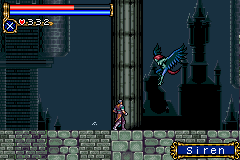
หาได้จากศัตรู : Skeleton Athlete, Siren
Thunderbird
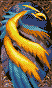
นกสายฟ้าในตำนาน สร้างฟ้าผ่าได้
มีพลังเกี่ยวกับไฟฟ้า
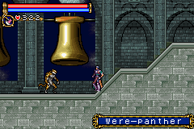
หาได้จากศัตรู : Were-panther, Dullahan
Unicorn
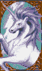
ม้าสีขาวที่มีเขาศักดิ์สิทธิ์บนหน้าผาก
มีพลังเกี่ยวกับแสง
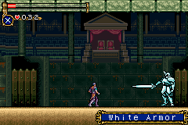
หาได้จากศัตรู : White Armor
Black Dog
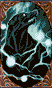
สุนัขสีดำ
มีพลังเกี่ยวกับความมืด
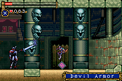
หาได้จากศัตรู : Devil Armor
|

{kind=link}